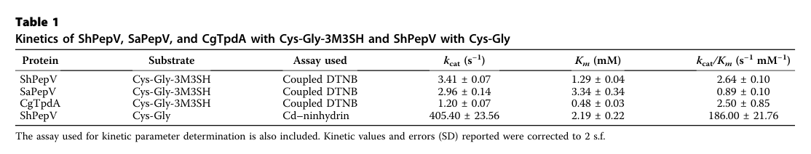

A putative cytoplasmic dipeptidase of the peptidase M20A family (PepV-type) from Fusobacterium nucleatum. PepV enzymes are metal-dependent (dinuclear active-site metal centre, typically described as di-zinc in crystal structures but functionally preferring Mn2+ in several characterized homologs) exopeptidases that hydrolyze a broad range of L-amino-acid dipeptides into their constituent free amino acids, while being selective for dipeptides over tripeptides. The protein has the canonical two-domain PepV architecture comprising a catalytic domain and a lid/dimerization domain that together enclose the active site. In F. nucleatum, an asaccharolytic organism that relies on proteins and peptides as growth substrates, such intracellular dipeptidase activity supplies amino acids from imported dipeptides for energy and biosynthesis. This protein is annotated from a whole-genome shotgun (WGS) entry and has not been directly characterized; its function is inferred from family/domain signatures and from biochemically characterized PepV homologs together with organism-level dipeptidase physiology.
| GO Term | Evidence | Action | Reason |
|---|---|---|---|
|
GO:0006526
L-arginine biosynthetic process
|
IEA
GO_REF:0000118 |
REMOVE |
Summary: TreeGrafter grafted this protein onto a PANTHER node (PTN000865753, family PTHR43808 "ACETYLORNITHINE DEACETYLASE") associated with arginine biosynthesis. This is a paralog over-annotation. The protein's specific domain signatures (CDD cd03888 M20_PepV; TIGRFAM TIGR01887 "dipeptidaselike"; InterPro IPR010964 M20A_pepV-rel) and the "Putative dipeptidase PepV" name place it in the PepV dipeptidase branch of the broad M20A family, not the acetylornithine-deacetylase (ArgE) branch that participates in arginine biosynthesis.
Reason: The M20A family (PTHR43808) is broad and contains multiple functionally distinct subfamilies, including PepV dipeptidases, ArgE/acetylornithine deacetylase, and DapE. TreeGrafter placed A0A133P372 on the acetylornithine-deacetylase node, but the PepV-specific CDD/TIGRFAM/InterPro signatures and the UniProt name indicate this is a PepV dipeptidase involved in peptide catabolism, not an arginine-biosynthetic enzyme. Assigning an L-arginine biosynthetic process is a wrong-subfamily electronic mis-graft and is not supported by any direct or homolog evidence for this protein.
Supporting Evidence:
PMID:39454956
Previously reported examples include the tripeptidase PepT (22, 23) of the M20B subfamily and the promiscuous dipeptidase PepV (24, 25) of the M20A subfamily.
|
|
GO:0008270
zinc ion binding
|
IEA
GO_REF:0000002 |
ACCEPT |
Summary: PepV-family M20A enzymes are dinuclear metallopeptidases; crystal structures of PepV and the related PepD show two catalytic metal ions, typically modeled as zinc, that bind the active site and activate the catalytic water. The UniProt record lists Zn(2+) as cofactor (ARBA). This is well supported structurally.
Reason: Structural studies of PepV (Lactobacillus delbrueckii, PDB 1LFW) and the homologous PepD (Vibrio alginolyticus) establish a dinuclear zinc active site whose metals stabilize the tetrahedral intermediate and activate the catalytic water. The UniProt cofactor annotation (Zn2+) and InterPro IPR010964 support zinc binding. Note that some characterized PepV homologs (S. hominis ShPepV, S. aureus SaPepV) are functionally Mn2+-preferential in vitro, so the active site is more generally a divalent-metal centre; a broader GO:0046872 (metal ion binding) is also defensible, but di-zinc is the best-documented structural assignment and is retained.
Supporting Evidence:
PMID:12176387
The cocrystallized inhibitor illustrates the two roles of the two catalytic zinc ions, namely stabilization of the tetrahedral intermediate and activation of the catalytic water molecule.
PMID:20819954
each monomer comprises a catalytic domain containing two zinc ions at the active site center for its hydrolytic function
|
|
GO:0008777
acetylornithine deacetylase activity
|
IEA
GO_REF:0000118 |
REMOVE |
Summary: This activity comes from the same TreeGrafter graft onto the acetylornithine-deacetylase PANTHER node (PTHR43808 / PTN000865753) that produced the arginine-biosynthesis annotation. It is a paralog over-annotation. The PepV-specific signatures (CDD cd03888 M20_PepV, TIGRFAM TIGR01887 dipeptidaselike, InterPro IPR010964 M20A_pepV-rel) and the protein name indicate a dipeptidase, not an acetylornithine deacetylase.
Reason: PTHR43808 spans several catalytically distinct M20A subfamilies. The acetylornithine deacetylase (ArgE) function belongs to a different subfamily from PepV dipeptidases. Because the protein carries PepV-specific CDD/TIGRFAM/InterPro signatures and is named "Putative dipeptidase PepV," the acetylornithine deacetylase MF is a wrong-subfamily electronic mis-graft, not the protein's real function, and no evidence supports an acetylornithine deacetylase role for this protein.
Supporting Evidence:
PMID:39454956
Previously reported examples include the tripeptidase PepT (22, 23) of the M20B subfamily and the promiscuous dipeptidase PepV (24, 25) of the M20A subfamily.
|
|
GO:0016787
hydrolase activity
|
IEA
GO_REF:0000120 |
MARK AS OVER ANNOTATED |
Summary: This is the correct general activity class (PepV is a hydrolase), but it is a root-level, uninformative term. A more specific and well-supported molecular function is available, namely dipeptidase / metallopeptidase activity.
Reason: GO:0016787 (hydrolase activity) is not wrong, but it is far too general for a protein whose family identity supports the specific dipeptidase activity (GO:0016805) and metallopeptidase activity (GO:0008237). Per curation best practice, prefer the most specific defensible term; the specific terms are already (or should be) annotated, so the bare hydrolase term is redundant/over-general.
Supporting Evidence:
PMID:39454956
we set out to identify the dipeptidase responsible for this function in the staphylococcal malodor producer, S. hominis. We report the identification and biochemical characterization of the Cys-Gly-3M3SH active promiscuous metallopeptidase PepV from S. hominis.
|
|
GO:0016805
dipeptidase activity
|
IEA
GO_REF:0000002 |
ACCEPT |
Summary: This is the core molecular function and matches the PepV identity. InterPro IPR010964 (M20A_pepV-rel), the dipeptidase UniProt keyword, and biochemical characterization of multiple PepV homologs (broad-spectrum dipeptidases selective for dipeptides over tripeptides) all support dipeptidase activity as the primary function.
Reason: PepV proteins are biochemically established broad-specificity dipeptidases. ShPepV cleaved all L-amino-acid dipeptides tested (except D-Ala-D-Ala) but could not cleave a tripeptide, and L. delbrueckii PepV is a nonspecific amino dipeptidase. The InterPro IPR010964 signature and UniProt dipeptidase keyword directly assign this function to A0A133P372. This is the best-supported molecular function and is a core function of the gene. Direct assay of the F. nucleatum protein has not been done, so the IEA evidence is appropriate, but the assignment is strongly supported by family signatures and homolog biochemistry.
Supporting Evidence:
PMID:39454956
ShPepV was capable of cleaving all dipeptides tested (Fig. 2 and Datas S9 and S10). However, it was unable to cleave the tripeptide L-Ala-L-Ala-L-Ala, suggesting preference and selectivity for dipeptide substrates
PMID:12176387
PepV from Lactobacillus delbrueckii, a dinuclear zinc peptidase, has been characterized as an unspecific amino dipeptidase.
|
|
GO:0008237
metallopeptidase activity
|
IEA
GO_REF:0000002 |
NEW |
Summary: PepV is a metal-dependent peptidase of the M20 family; the UniProt record carries the Metalloprotease keyword and a metallopeptidase activity GO mapping (UniProtKB-KW), and characterized homologs require a divalent metal cofactor for catalysis. This molecular function is well supported and complements the specific dipeptidase activity term. This is not a novel discovery; it already exists as an IEA UniProtKB-KW mapping in the UniProt record (DR GO line) but is absent from the seeded QuickGO/GOA export, so it is flagged NEW here only to recommend its retention in GOA.
Reason: The M20A PepV enzymes are metallopeptidases that depend on active-site divalent metals to activate the catalytic water; ShPepV/SaPepV are metal-dependent and Mn2+-preferential in vitro, and PepV crystal structures contain a dinuclear metal centre. The UniProt Metalloprotease keyword and the GOA metallopeptidase mapping support this. It is retained as a core molecular function alongside dipeptidase activity.
Supporting Evidence:
PMID:39454956
We report the identification and biochemical characterization of the Cys-Gly-3M3SH active promiscuous metallopeptidase PepV from S. hominis.
PMID:40135891
PepV-a member of the M20 peptidase family which has been described as a manganese-dependent dipeptidase in vitro
|
|
GO:0006508
proteolysis
|
IEA
GO_REF:0000120 |
NEW |
Summary: PepV hydrolyzes peptide bonds (of dipeptides), so it participates in proteolysis. The UniProt record carries the Protease keyword and a proteolysis GO mapping (UniProtKB-KW). This is correct, though it is a general biological process term; the more specific peptide catabolic process (GO:0043171) is proposed below. Like the metallopeptidase term, this is not a novel discovery; it already exists as an IEA UniProtKB-KW mapping in the UniProt record but is absent from the seeded QuickGO/GOA export, so it is flagged NEW here only to recommend its retention in GOA.
Reason: As a dipeptidase, PepV cleaves peptide bonds and is correctly annotated to proteolysis. This is well supported by the protease keyword and by homolog biochemistry demonstrating dipeptide bond hydrolysis. It is retained as a non-core general process; the more specific direct role is captured by the proposed peptide catabolic process (GO:0043171) term.
Supporting Evidence:
PMID:12176387
PepV recognizes and fixes the dipeptide backbone, while the side chains are not specifically probed and can vary, rendering it a nonspecific dipeptidase.
|
|
GO:0070573
metallodipeptidase activity
|
IEA
GO_REF:0000002 |
NEW |
Summary: PepV is both a dipeptidase and a metallopeptidase; the specific child term metallodipeptidase activity precisely captures this combined identity (a metal-dependent dipeptidase). Proposing it as the most precise molecular-function term for the protein.
Reason: The protein's dipeptidase activity (GO:0016805) and metallopeptidase activity (GO:0008237) are both supported; the more specific term GO:0070573 (metallodipeptidase activity) unifies these and is the single most informative MF term for a metal-dependent PepV dipeptidase. Supported by homolog biochemistry showing metal-dependent dipeptide hydrolysis.
Supporting Evidence:
PMID:39454956
the Cys-Gly-3M3SH active promiscuous metallopeptidase PepV from S. hominis
PMID:40135891
PepV-a member of the M20 peptidase family which has been described as a manganese-dependent dipeptidase in vitro
|
|
GO:0043171
peptide catabolic process
|
IEA
GO_REF:0000002 |
NEW |
Summary: Hydrolysis of dipeptides into free amino acids is a peptide catabolic process. In F. nucleatum, which utilizes dipeptides as growth substrates and has intracellular dipeptidase activity, PepV-type activity contributes to the breakdown of imported dipeptides.
Reason: Beyond the generic proteolysis term, the biological role of a dipeptidase is the catabolic breakdown of peptides to liberate amino acids. F. nucleatum preferentially utilizes proteins and peptides and possesses intracellular dipeptidase activities; dipeptides such as glutamylglutamate support its growth. GO:0043171 (peptide catabolic process) captures this role. Evidence is organism-level plus homolog inference (no direct assay of this protein), so the IEA-level evidence is appropriate.
Supporting Evidence:
PMID:11860556
These results clearly indicate that dipeptides such as aspartylaspartate and glutamylglutamate can be utilized as growth substrates for P. gingivalis, P. intermedia, P. nigrescens and F. nucleatum.
PMID:39454956
this protein has a more general cellular function in dipeptide turnover, rather than a specialized role in malodor production
|
|
GO:0005737
cytoplasm
|
IEA
GO_REF:0000002 |
NEW |
Summary: PepV-type dipeptidases act intracellularly. F. nucleatum dipeptidase activity is predominantly intracellular, and characterized PepV homologs (S. aureus) localize primarily to the cytosol with no signal peptide. The protein has no detectable signal sequence, consistent with cytoplasmic localization.
Reason: Subcellular fractionation of S. aureus showed PepV is primarily cytosolic with only a minute membrane fraction, and it lacks an N-terminal signal sequence. F. nucleatum dipeptidase activity is described as intracellular. The F. nucleatum protein likewise has no signal peptide annotated. Cytoplasmic localization is therefore the most defensible compartment, supported by homolog evidence; marked at IEA level since this protein was not directly localized.
Supporting Evidence:
PMID:40135891
Immune-reactive PepV was observed in the cytosol with a minute amount in the membrane fraction
PMID:40135891
An N-terminal signal sequence could not be detected for S. aureus PepV using SignalP
|
Q: Does F. nucleatum PepV (A0A133P372) prefer Mn2+ or Zn2+ as its catalytic metal in vivo, and how does this affect substrate range?
Q: Which dipeptides are the physiologically most relevant substrates for PepV in F. nucleatum (e.g., glutamyl dipeptides, given F. nucleatum's use of glutamylglutamate)?
Q: Is pepV required for F. nucleatum growth on dipeptides as the sole peptide source, or is it functionally redundant with other intracellular peptidases?
Experiment: Recombinantly express and purify A0A133P372, then assay hydrolysis of a panel of L-amino-acid dipeptides (including glutamylglutamate and Xaa-His dipeptides) and a control tripeptide to confirm dipeptidase activity and dipeptide selectivity.
Experiment: Perform metal-reconstitution assays (apo-enzyme plus Mn2+, Zn2+, Co2+) to determine the preferred catalytic metal of the F. nucleatum enzyme.
Experiment: Construct a pepV deletion (or knockdown) in F. nucleatum and test growth on dipeptide-supplemented media to assess the in vivo contribution to dipeptide utilization; perform subcellular fractionation to confirm cytoplasmic localization.
The research report should be a detailed narrative explaining the function, biological processes, and localization of the gene product. Citations should be given for all claims.
You should prioritize authoritative reviews and primary scientific literature when conducting research. You can supplement
this with annotations you find in gene/protein databases, but these can be outdated or inaccurate.
We are specifically interested in the primary function of the gene - for enzymes, what reaction is catalyzed, and what is the substrate specificity? For transporters, what is the substrate? For structural proteins or adapters, what is the broader structural role? For signaling molecules, what is the role in the pathway.
We are interested in where in or outside the cell the gene product carries out its function.
We are also interested in the signaling or biochemical pathways in which the gene functions. We are less interested in broad pleiotropic effects, except where these elucidate the precise role.
Include evidence where possible. We are interested in both experimental evidence as well as inference from structure, evolution, or bioinformatic analysis. Precise studies should be prioritized over high-throughput, where available.
The target protein is UniProt accession A0A133P372 from Fusobacterium nucleatum, annotated as “putative dipeptidase PepV” and belonging to the peptidase M20A family (M20 metallopeptidases) with the canonical catalytic and dimerization/lid domains typical of PepV-like enzymes (per the user-provided UniProt context). No retrieved literature directly used the F. nucleatum locus name HMPREF3221_00844 or accession A0A133P372; therefore, gene-specific claims below are limited to (i) direct organism-level physiology in F. nucleatum plus (ii) mechanistic/biochemical inference from PepV/M20A homologs that are explicitly described as PepV (or closely related M20A dipeptidases). (takahashi2002dipeptideutilizationby pages 5-6, herman2024identificationofa pages 2-4)
PepV (also called peptidase V or aminopeptidase/dipeptidase V in some contexts) is best supported as a metal-dependent intracellular dipeptidase that hydrolyzes dipeptides into their constituent amino acids, thereby supporting amino-acid supply from imported peptides (herman2024identificationofa pages 2-4, takahashi2002dipeptideutilizationby pages 5-6). In the M20 family broadly, enzymes hydrolyze dipeptide and tripeptide substrates; for M20 enzymes related to PepV/PepD, substrates include Xaa–His dipeptides such as L-carnosine and L-homocarnosine, which is consistent with the family’s role in peptide/amino-acid utilization (chang2010crystalstructureand pages 1-2).
M20 metallopeptidases typically have a catalytic domain plus a lid/dimerization domain that shapes substrate binding (azam2025asecaassociatedprotease pages 2-5, chang2010crystalstructureand pages 6-7). Structure-guided analysis of PepV-like enzymes identifies lid-domain residues implicated in C-terminal/transition-state binding (e.g., Asn217, His269, Arg350 in PepV numbering referenced in the structural literature) (chang2010crystalstructureand pages 8-9). These enzymes use a di-metal catalytic center (often discussed as di-Zn in structural work on related M20 enzymes), where the metals activate a water molecule for nucleophilic attack during peptide bond hydrolysis (chang2010crystalstructureand pages 6-7, chang2010crystalstructureand pages 1-2).
The most defensible annotation is that F. nucleatum PepV is an intracellular metal-dependent dipeptidase catalyzing:
Dipeptide + H2O → amino acid 1 + amino acid 2
This conclusion is supported by:
- Direct organism-level evidence that F. nucleatum grows using dipeptides and contains intracellular dipeptidase activities (takahashi2002dipeptideutilizationby pages 5-6).
- Direct biochemical evidence that characterized PepV homologs are broad-spectrum dipeptidases selective for dipeptides (not tripeptides) (herman2024identificationofa pages 2-4).
Because no gene knockout/biochemical characterization of A0A133P372 itself was retrieved, substrate scope in F. nucleatum should be treated as inferred, not experimentally proven for this specific protein.
Evidence from PepV homolog biochemistry (highest-confidence homolog inference):
A 2024 mechanistic study identified a staphylococcal PepV (ShPepV; M20A family) as a general dipeptidase that cleaves a wide range of L-amino-acid dipeptides (all tested except D-Ala–D-Ala) and does not cleave the tripeptide L-Ala–L-Ala–L-Ala, indicating strong dipeptide selectivity (herman2024identificationofa pages 2-4). The same study quantified PepV kinetics on two dipeptides:
- Cys–Gly-3M3SH (bulky malodor precursor): kcat 3.41 s−1, Km 1.29 mM (herman2024identificationofa pages 4-5, herman2024identificationofa media ac4f7f69)
- Cys–Gly: kcat 405.40 s−1, Km 2.19 mM (herman2024identificationofa pages 4-5, herman2024identificationofa media ac4f7f69)
These data indicate PepV can accommodate both small and bulky dipeptides, though turnover can vary by ~2 orders of magnitude depending on substrate chemistry (herman2024identificationofa pages 4-5, herman2024identificationofa media ac4f7f69).
Evidence from F. nucleatum physiology (direct but not gene-specific):
In F. nucleatum strains ATCC 25586 and ATCC 10953, dipeptides supported growth in a concentration-dependent manner up to 5 mM, consistent with a physiology that relies on intracellular dipeptide hydrolysis (takahashi2002dipeptideutilizationby pages 5-6). The same work highlighted utilization of glutamylglutamate (Glu2) (takahashi2002dipeptideutilizationby pages 4-5).
Taken together, the best-supported substrate statement for A0A133P372 is: broad dipeptide hydrolysis supporting amino-acid supply; specific preferences (e.g., for Xaa–His, glutamyl dipeptides, or sulfur-containing dipeptides like Cys–Gly) remain unresolved in F. nucleatum without direct assay (herman2024identificationofa pages 2-4, takahashi2002dipeptideutilizationby pages 5-6).
PepV/M20A enzymes are metallopeptidases. The best recent biochemical evidence indicates PepV activity is strongly metal dependent and can show a preference for Mn2+:
- In vitro reactivation of EDTA-treated apo-ShPepV showed activity recovered most strongly with Mn2+, with Co2+ second-best (herman2024identificationofa pages 2-4, herman2024identificationofa media 7c781f26).
- Independent work on S. aureus PepV describes it as a manganese-dependent dipeptidase in vitro and notes that chelation can promote loss of metal cofactors and self-cleavage/autodegradation under specific conditions (azam2025asecaassociatedprotease pages 1-2, azam2025asecaassociatedprotease pages 11-13).
Structural literature for PepV-like M20 enzymes also supports a di-metal active site (often discussed as di-Zn in crystallographic contexts), consistent with metallo-dependent catalysis via metal-activated water (chang2010crystalstructureand pages 6-7, chang2010crystalstructureand pages 1-2). For F. nucleatum A0A133P372, the conservative conclusion is metal-dependent catalysis is highly likely, but whether its optimal metal is Mn2+ vs Zn2+ is not yet directly demonstrated for this species.
M20 peptidases can exist as monomers or dimers depending on subfamily and domain architecture (azam2025asecaassociatedprotease pages 2-5). Structural comparison work explicitly notes that PepV can exist as a monomer (contrasted with dimeric PepD in the same family) (chang2010crystalstructureand pages 1-2). In PepV-like enzymes, a lid domain folds over the active site to create a substrate-binding cavity, and specific lid residues participate in substrate/transition-state binding (chang2010crystalstructureand pages 6-7, chang2010crystalstructureand pages 8-9).
Thus, A0A133P372 is most reasonably modeled as a cytosolic, two-domain M20A metallopeptidase whose lid domain controls dipeptide access and specificity; whether it is strictly monomeric in vivo in F. nucleatum is not directly evidenced here.
Direct experimental localization of F. nucleatum A0A133P372 was not identified in the retrieved literature. However:
- F. nucleatum exhibits primarily intracellular dipeptidase activities (with minimal cell-bound activity, except weak aspartate dipeptidase activity in one strain), supporting an intracellular localization for dipeptidase function in this organism (takahashi2002dipeptideutilizationby pages 5-6).
- PepV homolog studies supporting intracellular roles include (i) staphylococcal PepV processing dipeptides after import (herman2024identificationofa pages 7-9) and (ii) cytosolic enrichment of PepV in S. aureus (azam2025asecaassociatedprotease pages 2-5).
Accordingly, the most defensible localization annotation for A0A133P372 is cytosolic (intracellular).
A physiological study of periodontal pathogens demonstrated that F. nucleatum strains can use dipeptides (e.g., glutamylglutamate) to support growth and convert substrates primarily into acetate and butyrate (with ammonia production), consistent with amino-acid fermentation pathways where dipeptide hydrolysis supplies amino-acid inputs (takahashi2002dipeptideutilizationby pages 4-5). The same study suggested F. nucleatum lacks uptake/transport for oligopeptides longer than dipeptides, implying a niche specialization in dipeptide import + intracellular hydrolysis (takahashi2002dipeptideutilizationby pages 5-6).
Direct 2023–2024 papers specifically characterizing PepV in F. nucleatum were not retrieved in the tool searches, so “recent developments” are best represented by PepV/M20A family advances with clear real-world relevance:
These developments strengthen confidence in annotating A0A133P372 as a broad dipeptidase and suggest a plausible Mn-dependent catalytic mode, while still requiring direct F. nucleatum-specific validation.
The strongest “real-world implementation” evidence in the retrieved set is the use of PepV biochemistry to explain and potentially modulate human malodor formation:
- PepV acts on an imported odor precursor dipeptide (Cys–Gly-3M3SH), enabling downstream conversion to the volatile thiol 3M3SH; this establishes PepV as a potential intervention point for controlling odor-associated microbial metabolism (herman2024identificationofa pages 7-9, herman2024identificationofa pages 1-2).
No F. nucleatum-specific clinical/industrial application of PepV was identified in the retrieved evidence.
Two cross-cutting expert-level conclusions are most directly supported by the primary literature assembled here:
1. PepV/M20A enzymes are best viewed as intracellular peptide catabolism enzymes, not secreted proteases, consistent with intracellular localization in multiple contexts and with F. nucleatum intracellular dipeptidase activity (takahashi2002dipeptideutilizationby pages 5-6, azam2025asecaassociatedprotease pages 2-5).
2. Substrate recognition is strongly controlled by lid-domain architecture, enabling broad dipeptide acceptance yet allowing substantial kinetic variation across substrates; this is evidenced by structural/mechanistic analysis of PepV-like enzymes (lid residues, active-site cavity) and by large kinetic differences between Cys–Gly and Cys–Gly-3M3SH (chang2010crystalstructureand pages 8-9, herman2024identificationofa pages 4-5).
Kinetic parameters for PepV-catalyzed dipeptide hydrolysis (staphylococcal PepV) include:
- Cys–Gly-3M3SH: kcat 3.41 s−1, Km 1.29 mM (herman2024identificationofa pages 4-5, herman2024identificationofa media ac4f7f69)
- Cys–Gly: kcat 405.40 s−1, Km 2.19 mM (herman2024identificationofa pages 4-5, herman2024identificationofa media ac4f7f69)
Metal-dependence experiments show strongest reactivation with Mn2+, with Co2+ next (herman2024identificationofa pages 2-4, herman2024identificationofa media 7c781f26).
In F. nucleatum strains ATCC 25586 and ATCC 10953, dipeptides supported growth up to 5 mM in a concentration-dependent manner (takahashi2002dipeptideutilizationby pages 5-6). Reported activity values for glutamylglutamate (Glu2) were 36.0 ± 6.5 (ATCC 25586) and 24.6 ± 5.2 (ATCC 10953) (takahashi2002dipeptideutilizationby pages 5-6). Fermentation end products from glutamate/Glu2 included acetate and butyrate with strain-specific yields (takahashi2002dipeptideutilizationby pages 4-5).
The following table consolidates direct evidence vs homolog-based inference relevant to annotating F. nucleatum PepV (A0A133P372):
| Evidence focus | Key findings | Source | URL/DOI | Notes on applicability to Fusobacterium nucleatum A0A133P372 |
|---|---|---|---|---|
| Reaction/substrate; metal dependence; organism/context | Staphylococcus hominis ShPepV is an M20A-family dipeptidase with broad activity on L-amino-acid dipeptides, but not tested on Ala-Ala-Ala, supporting dipeptide selectivity. It cleaves the malodor precursor Cys-Gly-3M3SH and also Cys-Gly. Reported kinetics: Cys-Gly-3M3SH kcat 3.41 s^-1, Km 1.29 mM, kcat/Km 2.64 s^-1 mM^-1; Cys-Gly kcat 405.40 s^-1, Km 2.19 mM, kcat/Km 186 s^-1 mM^-1. Apo-enzyme reactivation showed strongest activity with Mn2+, with Co2+ second-best, supporting metal-dependent catalysis with Mn preference. Structural modeling showed canonical PepV catalytic + lid architecture and a binding cleft accommodating bulky dipeptides. (herman2024identificationofa pages 4-5, herman2024identificationofa pages 2-4, herman2024identificationofa pages 1-2, herman2024identificationofa media ac4f7f69, herman2024identificationofa media 7c781f26) | Herman et al., 2024, Journal of Biological Chemistry | https://doi.org/10.1016/j.jbc.2024.107928 | Homolog inference. Strong evidence that bacterial PepV enzymes are intracellular metal-dependent dipeptidases with broad dipeptide scope; not direct data for F. nucleatum A0A133P372, but highly relevant for assigning generic PepV function. |
| Localization; pathway context; organism/context | In staphylococci, Cys-Gly-3M3SH is imported by DtpT, then PepV acts before PatB, implying intracellular/cytoplasmic processing of the dipeptide. The paper explicitly argues that an intracellular staphylococcal dipeptidase is required for malodor precursor processing. (herman2024identificationofa pages 7-9, herman2024identificationofa pages 1-2) | Herman et al., 2024, Journal of Biological Chemistry | https://doi.org/10.1016/j.jbc.2024.107928 | Homolog inference for localization. Supports annotating PepV as most likely cytosolic rather than secreted, consistent with peptide catabolism after import. |
| Structure/mechanism; metal center; oligomeric state; organism/context | Structural comparison paper on Vibrio alginolyticus PepD states that related M20 enzymes hydrolyze dipeptides/tripeptides including Xaa-His dipeptides and that PepD is structurally similar to PepV, which is noted to exist as a monomer. Family active sites contain two zinc ions; PepV substrate/transition-state binding residues previously identified include Asn217, His269, Arg350 in the lid domain, and catalysis involves a metal-activated water/hydroxide. (chang2010crystalstructureand pages 6-7, chang2010crystalstructureand pages 8-9, chang2010crystalstructureand pages 1-2, chang2010crystalstructureand pages 4-5) | Chang et al., 2010, Journal of Biological Chemistry | https://doi.org/10.1074/jbc.M110.139683 | Homolog/family inference only. Useful for assigning A0A133P372 to a metal-dependent M20A exopeptidase/dipeptidase with canonical catalytic/lid domains; substrate details may vary by species. |
| Family architecture; localization; metal dependence; organism/context | Staphylococcus aureus PepV is described as an M20 metallopeptidase and manganese-dependent dipeptidase in vitro that can cleave penicillin and other dipeptide substrates. It lacks a signal peptide and is reported as primarily cytosolic, with only a minor membrane-associated fraction; it also associates with SecA and modulates surface display of certain proteins. Chelation promotes loss of metal cofactors and PepV self-cleavage/autodegradation in vitro. (azam2025asecaassociatedprotease pages 11-13, azam2025asecaassociatedprotease pages 2-5, azam2025asecaassociatedprotease pages 1-2) | Azam et al., 2025, Journal of Bacteriology | https://doi.org/10.1128/jb.00522-24 | Homolog inference. Supports cytosolic localization and Mn-dependent dipeptidase activity, but the SecA/surface-display role is likely lineage-specific and should not be transferred directly to F. nucleatum without direct evidence. |
| Direct evidence in Fusobacterium nucleatum; peptide utilization; localization context | In F. nucleatum strains ATCC 25586 and ATCC 10953, dipeptides supported growth in a concentration-dependent manner up to 5 mM. The organisms utilized glutamylglutamate (Glu2); Glu2 activity values reported were 36.0 ± 6.5 (ATCC 25586) and 24.6 ± 5.2 (ATCC 10953). The paper states that all tested strains had intracellular dipeptidase activities, while cell-bound activity was absent except weak aspartate dipeptidase activity in F. nucleatum ATCC 10953. The authors further note F. nucleatum appeared to lack transport activity for oligopeptides longer than dipeptides. (takahashi2002dipeptideutilizationby pages 5-6, takahashi2002dipeptideutilizationby pages 1-4, takahashi2002dipeptideutilizationby pages 4-5) | Takahashi & Sato, 2002, Oral Microbiology and Immunology | https://doi.org/10.1046/j.0902-0055.2001.00089.x | Direct organism-level evidence, but not gene-specific for A0A133P372. Strongly supports that F. nucleatum has intracellular dipeptidase function and uses dipeptides nutritionally, consistent with annotating PepV as part of intracellular peptide catabolism. |
| Functional synthesis for annotation | Across direct F. nucleatum physiology and PepV homolog biochemistry, the most defensible annotation is that A0A133P372 is a putative intracellular metal-dependent dipeptidase (PepV/M20A family) involved in hydrolysis of imported dipeptides to free amino acids for nutrition/metabolism. Evidence for exact substrate preference in F. nucleatum remains unverified experimentally; broad dipeptide specificity and Mn/Zn-dependent catalysis are inferred from homologs, whereas intracellular dipeptide use is supported directly at the organism level. (herman2024identificationofa pages 4-5, herman2024identificationofa pages 2-4, takahashi2002dipeptideutilizationby pages 5-6, takahashi2002dipeptideutilizationby pages 4-5) | Synthesis from cited studies | URLs above | Best-current functional annotation for A0A133P372; confidence is moderate for general dipeptidase role, lower for precise substrate spectrum and metal preference in F. nucleatum. |
Table: This table compiles direct and homolog-based evidence relevant to annotating Fusobacterium nucleatum A0A133P372 as a PepV-family M20A dipeptidase. It separates organism-level physiology from cross-species biochemical inference so the strength and scope of each claim are clear.
References
(takahashi2002dipeptideutilizationby pages 5-6): N. Takahashi and Takuichi Sato. Dipeptide utilization by the periodontal pathogens porphyromonas gingivalis, prevotella intermedia, prevotella nigrescens and fusobacterium nucleatum. Oral microbiology and immunology, 17 1:50-4, Feb 2002. URL: https://doi.org/10.1046/j.0902-0055.2001.00089.x, doi:10.1046/j.0902-0055.2001.00089.x. This article has 85 citations.
(herman2024identificationofa pages 2-4): Reyme Herman, Bethan Kinniment-Williams, Michelle Rudden, Alexander Gordon James, Anthony J. Wilkinson, Barry Murphy, and Gavin H. Thomas. Identification of a staphylococcal dipeptidase involved in the production of human body odor. Journal of Biological Chemistry, 300:107928, Dec 2024. URL: https://doi.org/10.1016/j.jbc.2024.107928, doi:10.1016/j.jbc.2024.107928. This article has 5 citations and is from a domain leading peer-reviewed journal.
(chang2010crystalstructureand pages 1-2): Chin-Yuan Chang, Yin-Cheng Hsieh, Ting-Yi Wang, Yi-Chin Chen, Yu-Kuo Wang, Ting-Wei Chiang, Yi-Ju Chen, Cheng-Hsiang Chang, Chun-Jung Chen, and Tung-Kung Wu. Crystal structure and mutational analysis of aminoacylhistidine dipeptidase from vibrio alginolyticus reveal a new architecture of m20 metallopeptidases. Journal of Biological Chemistry, 285:39500-39510, Dec 2010. URL: https://doi.org/10.1074/jbc.m110.139683, doi:10.1074/jbc.m110.139683. This article has 25 citations and is from a domain leading peer-reviewed journal.
(azam2025asecaassociatedprotease pages 2-5): Muhammad S. Azam, Amany M. Ibrahim, Owen Leddy, So-Young Oh, Olaf Schneewind, and Dominique Missiakas. A seca-associated protease modulates the extent of surface display of staphylococcal protein a. Apr 2025. URL: https://doi.org/10.1128/jb.00522-24, doi:10.1128/jb.00522-24. This article has 2 citations and is from a peer-reviewed journal.
(chang2010crystalstructureand pages 6-7): Chin-Yuan Chang, Yin-Cheng Hsieh, Ting-Yi Wang, Yi-Chin Chen, Yu-Kuo Wang, Ting-Wei Chiang, Yi-Ju Chen, Cheng-Hsiang Chang, Chun-Jung Chen, and Tung-Kung Wu. Crystal structure and mutational analysis of aminoacylhistidine dipeptidase from vibrio alginolyticus reveal a new architecture of m20 metallopeptidases. Journal of Biological Chemistry, 285:39500-39510, Dec 2010. URL: https://doi.org/10.1074/jbc.m110.139683, doi:10.1074/jbc.m110.139683. This article has 25 citations and is from a domain leading peer-reviewed journal.
(chang2010crystalstructureand pages 8-9): Chin-Yuan Chang, Yin-Cheng Hsieh, Ting-Yi Wang, Yi-Chin Chen, Yu-Kuo Wang, Ting-Wei Chiang, Yi-Ju Chen, Cheng-Hsiang Chang, Chun-Jung Chen, and Tung-Kung Wu. Crystal structure and mutational analysis of aminoacylhistidine dipeptidase from vibrio alginolyticus reveal a new architecture of m20 metallopeptidases. Journal of Biological Chemistry, 285:39500-39510, Dec 2010. URL: https://doi.org/10.1074/jbc.m110.139683, doi:10.1074/jbc.m110.139683. This article has 25 citations and is from a domain leading peer-reviewed journal.
(herman2024identificationofa pages 4-5): Reyme Herman, Bethan Kinniment-Williams, Michelle Rudden, Alexander Gordon James, Anthony J. Wilkinson, Barry Murphy, and Gavin H. Thomas. Identification of a staphylococcal dipeptidase involved in the production of human body odor. Journal of Biological Chemistry, 300:107928, Dec 2024. URL: https://doi.org/10.1016/j.jbc.2024.107928, doi:10.1016/j.jbc.2024.107928. This article has 5 citations and is from a domain leading peer-reviewed journal.
(herman2024identificationofa media ac4f7f69): Reyme Herman, Bethan Kinniment-Williams, Michelle Rudden, Alexander Gordon James, Anthony J. Wilkinson, Barry Murphy, and Gavin H. Thomas. Identification of a staphylococcal dipeptidase involved in the production of human body odor. Journal of Biological Chemistry, 300:107928, Dec 2024. URL: https://doi.org/10.1016/j.jbc.2024.107928, doi:10.1016/j.jbc.2024.107928. This article has 5 citations and is from a domain leading peer-reviewed journal.
(takahashi2002dipeptideutilizationby pages 4-5): N. Takahashi and Takuichi Sato. Dipeptide utilization by the periodontal pathogens porphyromonas gingivalis, prevotella intermedia, prevotella nigrescens and fusobacterium nucleatum. Oral microbiology and immunology, 17 1:50-4, Feb 2002. URL: https://doi.org/10.1046/j.0902-0055.2001.00089.x, doi:10.1046/j.0902-0055.2001.00089.x. This article has 85 citations.
(herman2024identificationofa media 7c781f26): Reyme Herman, Bethan Kinniment-Williams, Michelle Rudden, Alexander Gordon James, Anthony J. Wilkinson, Barry Murphy, and Gavin H. Thomas. Identification of a staphylococcal dipeptidase involved in the production of human body odor. Journal of Biological Chemistry, 300:107928, Dec 2024. URL: https://doi.org/10.1016/j.jbc.2024.107928, doi:10.1016/j.jbc.2024.107928. This article has 5 citations and is from a domain leading peer-reviewed journal.
(azam2025asecaassociatedprotease pages 1-2): Muhammad S. Azam, Amany M. Ibrahim, Owen Leddy, So-Young Oh, Olaf Schneewind, and Dominique Missiakas. A seca-associated protease modulates the extent of surface display of staphylococcal protein a. Apr 2025. URL: https://doi.org/10.1128/jb.00522-24, doi:10.1128/jb.00522-24. This article has 2 citations and is from a peer-reviewed journal.
(azam2025asecaassociatedprotease pages 11-13): Muhammad S. Azam, Amany M. Ibrahim, Owen Leddy, So-Young Oh, Olaf Schneewind, and Dominique Missiakas. A seca-associated protease modulates the extent of surface display of staphylococcal protein a. Apr 2025. URL: https://doi.org/10.1128/jb.00522-24, doi:10.1128/jb.00522-24. This article has 2 citations and is from a peer-reviewed journal.
(herman2024identificationofa pages 7-9): Reyme Herman, Bethan Kinniment-Williams, Michelle Rudden, Alexander Gordon James, Anthony J. Wilkinson, Barry Murphy, and Gavin H. Thomas. Identification of a staphylococcal dipeptidase involved in the production of human body odor. Journal of Biological Chemistry, 300:107928, Dec 2024. URL: https://doi.org/10.1016/j.jbc.2024.107928, doi:10.1016/j.jbc.2024.107928. This article has 5 citations and is from a domain leading peer-reviewed journal.
(herman2024identificationofa pages 1-2): Reyme Herman, Bethan Kinniment-Williams, Michelle Rudden, Alexander Gordon James, Anthony J. Wilkinson, Barry Murphy, and Gavin H. Thomas. Identification of a staphylococcal dipeptidase involved in the production of human body odor. Journal of Biological Chemistry, 300:107928, Dec 2024. URL: https://doi.org/10.1016/j.jbc.2024.107928, doi:10.1016/j.jbc.2024.107928. This article has 5 citations and is from a domain leading peer-reviewed journal.
(chang2010crystalstructureand pages 4-5): Chin-Yuan Chang, Yin-Cheng Hsieh, Ting-Yi Wang, Yi-Chin Chen, Yu-Kuo Wang, Ting-Wei Chiang, Yi-Ju Chen, Cheng-Hsiang Chang, Chun-Jung Chen, and Tung-Kung Wu. Crystal structure and mutational analysis of aminoacylhistidine dipeptidase from vibrio alginolyticus reveal a new architecture of m20 metallopeptidases. Journal of Biological Chemistry, 285:39500-39510, Dec 2010. URL: https://doi.org/10.1074/jbc.m110.139683, doi:10.1074/jbc.m110.139683. This article has 25 citations and is from a domain leading peer-reviewed journal.
(takahashi2002dipeptideutilizationby pages 1-4): N. Takahashi and Takuichi Sato. Dipeptide utilization by the periodontal pathogens porphyromonas gingivalis, prevotella intermedia, prevotella nigrescens and fusobacterium nucleatum. Oral microbiology and immunology, 17 1:50-4, Feb 2002. URL: https://doi.org/10.1046/j.0902-0055.2001.00089.x, doi:10.1046/j.0902-0055.2001.00089.x. This article has 85 citations.

id: A0A133P372
gene_symbol: pepV
product_type: PROTEIN
status: DRAFT
taxon:
id: NCBITaxon:851
label: Fusobacterium nucleatum
description: A putative cytoplasmic dipeptidase of the peptidase M20A family (PepV-type)
from Fusobacterium nucleatum. PepV enzymes are metal-dependent (dinuclear active-site
metal centre, typically described as di-zinc in crystal structures but functionally
preferring Mn2+ in several characterized homologs) exopeptidases that hydrolyze a broad
range of L-amino-acid dipeptides into their constituent free amino acids, while being
selective for dipeptides over tripeptides. The protein has the canonical two-domain PepV
architecture comprising a catalytic domain and a lid/dimerization domain that together
enclose the active site. In F. nucleatum, an asaccharolytic organism that relies on
proteins and peptides as growth substrates, such intracellular dipeptidase activity
supplies amino acids from imported dipeptides for energy and biosynthesis. This protein
is annotated from a whole-genome shotgun (WGS) entry and has not been directly
characterized; its function is inferred from family/domain signatures and from
biochemically characterized PepV homologs together with organism-level dipeptidase
physiology.
existing_annotations:
- term:
id: GO:0006526
label: L-arginine biosynthetic process
evidence_type: IEA
original_reference_id: GO_REF:0000118
qualifier: involved_in
review:
summary: TreeGrafter grafted this protein onto a PANTHER node (PTN000865753, family
PTHR43808 "ACETYLORNITHINE DEACETYLASE") associated with arginine biosynthesis.
This is a paralog over-annotation. The protein's specific domain signatures
(CDD cd03888 M20_PepV; TIGRFAM TIGR01887 "dipeptidaselike"; InterPro IPR010964
M20A_pepV-rel) and the "Putative dipeptidase PepV" name place it in the PepV
dipeptidase branch of the broad M20A family, not the acetylornithine-deacetylase
(ArgE) branch that participates in arginine biosynthesis.
action: REMOVE
reason: The M20A family (PTHR43808) is broad and contains multiple functionally
distinct subfamilies, including PepV dipeptidases, ArgE/acetylornithine
deacetylase, and DapE. TreeGrafter placed A0A133P372 on the acetylornithine-deacetylase
node, but the PepV-specific CDD/TIGRFAM/InterPro signatures and the UniProt name
indicate this is a PepV dipeptidase involved in peptide catabolism, not an
arginine-biosynthetic enzyme. Assigning an L-arginine biosynthetic process is a
wrong-subfamily electronic mis-graft and is not supported by any direct or homolog
evidence for this protein.
supported_by:
- reference_id: PMID:39454956
supporting_text: 'Previously reported examples include the tripeptidase PepT (22,
23) of the M20B subfamily and the promiscuous dipeptidase PepV (24, 25) of the
M20A subfamily.'
- term:
id: GO:0008270
label: zinc ion binding
evidence_type: IEA
original_reference_id: GO_REF:0000002
qualifier: enables
review:
summary: PepV-family M20A enzymes are dinuclear metallopeptidases; crystal structures
of PepV and the related PepD show two catalytic metal ions, typically modeled as
zinc, that bind the active site and activate the catalytic water. The UniProt record
lists Zn(2+) as cofactor (ARBA). This is well supported structurally.
action: ACCEPT
reason: Structural studies of PepV (Lactobacillus delbrueckii, PDB 1LFW) and the
homologous PepD (Vibrio alginolyticus) establish a dinuclear zinc active site whose
metals stabilize the tetrahedral intermediate and activate the catalytic water.
The UniProt cofactor annotation (Zn2+) and InterPro IPR010964 support zinc binding.
Note that some characterized PepV homologs (S. hominis ShPepV, S. aureus SaPepV)
are functionally Mn2+-preferential in vitro, so the active site is more generally a
divalent-metal centre; a broader GO:0046872 (metal ion binding) is also defensible,
but di-zinc is the best-documented structural assignment and is retained.
supported_by:
- reference_id: PMID:12176387
supporting_text: The cocrystallized inhibitor illustrates the two roles of the two
catalytic zinc ions, namely stabilization of the tetrahedral intermediate and
activation of the catalytic water molecule.
- reference_id: PMID:20819954
supporting_text: each monomer comprises a catalytic domain containing two zinc ions
at the active site center for its hydrolytic function
- term:
id: GO:0008777
label: acetylornithine deacetylase activity
evidence_type: IEA
original_reference_id: GO_REF:0000118
qualifier: enables
review:
summary: This activity comes from the same TreeGrafter graft onto the acetylornithine-deacetylase
PANTHER node (PTHR43808 / PTN000865753) that produced the arginine-biosynthesis
annotation. It is a paralog over-annotation. The PepV-specific signatures (CDD
cd03888 M20_PepV, TIGRFAM TIGR01887 dipeptidaselike, InterPro IPR010964
M20A_pepV-rel) and the protein name indicate a dipeptidase, not an acetylornithine
deacetylase.
action: REMOVE
reason: PTHR43808 spans several catalytically distinct M20A subfamilies. The
acetylornithine deacetylase (ArgE) function belongs to a different subfamily from
PepV dipeptidases. Because the protein carries PepV-specific CDD/TIGRFAM/InterPro
signatures and is named "Putative dipeptidase PepV," the acetylornithine deacetylase
MF is a wrong-subfamily electronic mis-graft, not the protein's real function, and
no evidence supports an acetylornithine deacetylase role for this protein.
supported_by:
- reference_id: PMID:39454956
supporting_text: 'Previously reported examples include the tripeptidase PepT (22,
23) of the M20B subfamily and the promiscuous dipeptidase PepV (24, 25) of the
M20A subfamily.'
- term:
id: GO:0016787
label: hydrolase activity
evidence_type: IEA
original_reference_id: GO_REF:0000120
qualifier: enables
review:
summary: This is the correct general activity class (PepV is a hydrolase), but it is
a root-level, uninformative term. A more specific and well-supported molecular
function is available, namely dipeptidase / metallopeptidase activity.
action: MARK_AS_OVER_ANNOTATED
reason: GO:0016787 (hydrolase activity) is not wrong, but it is far too general for a
protein whose family identity supports the specific dipeptidase activity (GO:0016805)
and metallopeptidase activity (GO:0008237). Per curation best practice, prefer the
most specific defensible term; the specific terms are already (or should be)
annotated, so the bare hydrolase term is redundant/over-general.
proposed_replacement_terms:
- id: GO:0070573
label: metallodipeptidase activity
- id: GO:0016805
label: dipeptidase activity
- id: GO:0008237
label: metallopeptidase activity
supported_by:
- reference_id: PMID:39454956
supporting_text: we set out to identify the dipeptidase responsible for this
function in the staphylococcal malodor producer, S. hominis. We report the
identification and biochemical characterization of the Cys-Gly-3M3SH active
promiscuous metallopeptidase PepV from S. hominis.
- term:
id: GO:0016805
label: dipeptidase activity
evidence_type: IEA
original_reference_id: GO_REF:0000002
qualifier: enables
review:
summary: This is the core molecular function and matches the PepV identity. InterPro
IPR010964 (M20A_pepV-rel), the dipeptidase UniProt keyword, and biochemical
characterization of multiple PepV homologs (broad-spectrum dipeptidases selective
for dipeptides over tripeptides) all support dipeptidase activity as the primary
function.
action: ACCEPT
reason: PepV proteins are biochemically established broad-specificity dipeptidases.
ShPepV cleaved all L-amino-acid dipeptides tested (except D-Ala-D-Ala) but could
not cleave a tripeptide, and L. delbrueckii PepV is a nonspecific amino dipeptidase.
The InterPro IPR010964 signature and UniProt dipeptidase keyword directly assign
this function to A0A133P372. This is the best-supported molecular function and is
a core function of the gene. Direct assay of the F. nucleatum protein has not been
done, so the IEA evidence is appropriate, but the assignment is strongly supported
by family signatures and homolog biochemistry.
supported_by:
- reference_id: PMID:39454956
supporting_text: ShPepV was capable of cleaving all dipeptides tested (Fig. 2 and
Datas S9 and S10). However, it was unable to cleave the tripeptide L-Ala-L-Ala-L-Ala,
suggesting preference and selectivity for dipeptide substrates
- reference_id: PMID:12176387
supporting_text: PepV from Lactobacillus delbrueckii, a dinuclear zinc peptidase,
has been characterized as an unspecific amino dipeptidase.
- term:
id: GO:0008237
label: metallopeptidase activity
evidence_type: IEA
original_reference_id: GO_REF:0000002
qualifier: enables
review:
summary: PepV is a metal-dependent peptidase of the M20 family; the UniProt record
carries the Metalloprotease keyword and a metallopeptidase activity GO mapping
(UniProtKB-KW), and characterized homologs require a divalent metal cofactor for
catalysis. This molecular function is well supported and complements the specific
dipeptidase activity term. This is not a novel discovery; it already exists as an
IEA UniProtKB-KW mapping in the UniProt record (DR GO line) but is absent from the
seeded QuickGO/GOA export, so it is flagged NEW here only to recommend its retention
in GOA.
action: NEW
reason: The M20A PepV enzymes are metallopeptidases that depend on active-site divalent
metals to activate the catalytic water; ShPepV/SaPepV are metal-dependent and
Mn2+-preferential in vitro, and PepV crystal structures contain a dinuclear metal
centre. The UniProt Metalloprotease keyword and the GOA metallopeptidase mapping
support this. It is retained as a core molecular function alongside dipeptidase
activity.
supported_by:
- reference_id: PMID:39454956
supporting_text: We report the identification and biochemical characterization of
the Cys-Gly-3M3SH active promiscuous metallopeptidase PepV from S. hominis.
- reference_id: PMID:40135891
supporting_text: PepV-a member of the M20 peptidase family which has been described
as a manganese-dependent dipeptidase in vitro
- term:
id: GO:0006508
label: proteolysis
evidence_type: IEA
original_reference_id: GO_REF:0000120
qualifier: involved_in
review:
summary: PepV hydrolyzes peptide bonds (of dipeptides), so it participates in
proteolysis. The UniProt record carries the Protease keyword and a proteolysis GO
mapping (UniProtKB-KW). This is correct, though it is a general biological process
term; the more specific peptide catabolic process (GO:0043171) is proposed below.
Like the metallopeptidase term, this is not a novel discovery; it already exists as
an IEA UniProtKB-KW mapping in the UniProt record but is absent from the seeded
QuickGO/GOA export, so it is flagged NEW here only to recommend its retention in GOA.
action: NEW
reason: As a dipeptidase, PepV cleaves peptide bonds and is correctly annotated to
proteolysis. This is well supported by the protease keyword and by homolog
biochemistry demonstrating dipeptide bond hydrolysis. It is retained as a non-core
general process; the more specific direct role is captured by the proposed peptide
catabolic process (GO:0043171) term.
supported_by:
- reference_id: PMID:12176387
supporting_text: PepV recognizes and fixes the dipeptide backbone, while the side
chains are not specifically probed and can vary, rendering it a nonspecific
dipeptidase.
- term:
id: GO:0070573
label: metallodipeptidase activity
evidence_type: IEA
original_reference_id: GO_REF:0000002
qualifier: enables
review:
summary: PepV is both a dipeptidase and a metallopeptidase; the specific child term
metallodipeptidase activity precisely captures this combined identity (a
metal-dependent dipeptidase). Proposing it as the most precise molecular-function
term for the protein.
action: NEW
reason: The protein's dipeptidase activity (GO:0016805) and metallopeptidase activity
(GO:0008237) are both supported; the more specific term GO:0070573
(metallodipeptidase activity) unifies these and is the single most informative MF
term for a metal-dependent PepV dipeptidase. Supported by homolog biochemistry
showing metal-dependent dipeptide hydrolysis.
supported_by:
- reference_id: PMID:39454956
supporting_text: the Cys-Gly-3M3SH active promiscuous metallopeptidase PepV from
S. hominis
- reference_id: PMID:40135891
supporting_text: PepV-a member of the M20 peptidase family which has been described
as a manganese-dependent dipeptidase in vitro
- term:
id: GO:0043171
label: peptide catabolic process
evidence_type: IEA
original_reference_id: GO_REF:0000002
qualifier: involved_in
review:
summary: Hydrolysis of dipeptides into free amino acids is a peptide catabolic process.
In F. nucleatum, which utilizes dipeptides as growth substrates and has intracellular
dipeptidase activity, PepV-type activity contributes to the breakdown of imported
dipeptides.
action: NEW
reason: Beyond the generic proteolysis term, the biological role of a dipeptidase is
the catabolic breakdown of peptides to liberate amino acids. F. nucleatum
preferentially utilizes proteins and peptides and possesses intracellular
dipeptidase activities; dipeptides such as glutamylglutamate support its growth.
GO:0043171 (peptide catabolic process) captures this role. Evidence is organism-level
plus homolog inference (no direct assay of this protein), so the IEA-level evidence
is appropriate.
supported_by:
- reference_id: PMID:11860556
supporting_text: These results clearly indicate that dipeptides such as
aspartylaspartate and glutamylglutamate can be utilized as growth substrates for
P. gingivalis, P. intermedia, P. nigrescens and F. nucleatum.
- reference_id: PMID:39454956
supporting_text: this protein has a more general cellular function in dipeptide
turnover, rather than a specialized role in malodor production
- term:
id: GO:0005737
label: cytoplasm
evidence_type: IEA
original_reference_id: GO_REF:0000002
qualifier: located_in
review:
summary: PepV-type dipeptidases act intracellularly. F. nucleatum dipeptidase activity
is predominantly intracellular, and characterized PepV homologs (S. aureus) localize
primarily to the cytosol with no signal peptide. The protein has no detectable
signal sequence, consistent with cytoplasmic localization.
action: NEW
reason: Subcellular fractionation of S. aureus showed PepV is primarily cytosolic
with only a minute membrane fraction, and it lacks an N-terminal signal sequence.
F. nucleatum dipeptidase activity is described as intracellular. The F. nucleatum
protein likewise has no signal peptide annotated. Cytoplasmic localization is
therefore the most defensible compartment, supported by homolog evidence; marked at
IEA level since this protein was not directly localized.
supported_by:
- reference_id: PMID:40135891
supporting_text: Immune-reactive PepV was observed in the cytosol with a minute
amount in the membrane fraction
- reference_id: PMID:40135891
supporting_text: An N-terminal signal sequence could not be detected for S. aureus
PepV using SignalP
core_functions:
- description: Metal-dependent (dinuclear metallo-) dipeptidase that hydrolyzes a broad
range of L-amino-acid dipeptides into their constituent free amino acids, with
selectivity for dipeptides over longer peptides.
supported_by:
- reference_id: PMID:39454956
supporting_text: ShPepV was capable of cleaving all dipeptides tested (Fig. 2 and
Datas S9 and S10). However, it was unable to cleave the tripeptide L-Ala-L-Ala-L-Ala,
suggesting preference and selectivity for dipeptide substrates
- reference_id: PMID:12176387
supporting_text: PepV from Lactobacillus delbrueckii, a dinuclear zinc peptidase,
has been characterized as an unspecific amino dipeptidase.
molecular_function:
id: GO:0070573
label: metallodipeptidase activity
- description: Intracellular catabolism of imported dipeptides to supply free amino acids
for energy and biosynthesis in an asaccharolytic, peptide-utilizing organism.
supported_by:
- reference_id: PMID:11860556
supporting_text: These results clearly indicate that dipeptides such as
aspartylaspartate and glutamylglutamate can be utilized as growth substrates for
P. gingivalis, P. intermedia, P. nigrescens and F. nucleatum.
directly_involved_in:
- id: GO:0043171
label: peptide catabolic process
locations:
- id: GO:0005737
label: cytoplasm
proposed_new_terms: []
suggested_questions:
- question: Does F. nucleatum PepV (A0A133P372) prefer Mn2+ or Zn2+ as its catalytic
metal in vivo, and how does this affect substrate range?
- question: Which dipeptides are the physiologically most relevant substrates for PepV
in F. nucleatum (e.g., glutamyl dipeptides, given F. nucleatum's use of
glutamylglutamate)?
- question: Is pepV required for F. nucleatum growth on dipeptides as the sole peptide
source, or is it functionally redundant with other intracellular peptidases?
suggested_experiments:
- description: Recombinantly express and purify A0A133P372, then assay hydrolysis of a
panel of L-amino-acid dipeptides (including glutamylglutamate and Xaa-His dipeptides)
and a control tripeptide to confirm dipeptidase activity and dipeptide selectivity.
- description: Perform metal-reconstitution assays (apo-enzyme plus Mn2+, Zn2+, Co2+) to
determine the preferred catalytic metal of the F. nucleatum enzyme.
- description: Construct a pepV deletion (or knockdown) in F. nucleatum and test growth on
dipeptide-supplemented media to assess the in vivo contribution to dipeptide
utilization; perform subcellular fractionation to confirm cytoplasmic localization.
references:
- id: GO_REF:0000002
title: Gene Ontology annotation through association of InterPro records with GO terms
findings: []
- id: GO_REF:0000118
title: TreeGrafter-generated GO annotations
findings: []
- id: GO_REF:0000120
title: Combined Automated Annotation using Multiple IEA Methods
findings: []
- id: PMID:11860556
title: Dipeptide utilization by the periodontal pathogens Porphyromonas gingivalis,
Prevotella intermedia, Prevotella nigrescens and Fusobacterium nucleatum.
findings:
- statement: F. nucleatum preferentially utilizes proteins and peptides as growth
substrates and can use dipeptides such as glutamylglutamate as growth substrates.
supporting_text: These results clearly indicate that dipeptides such as
aspartylaspartate and glutamylglutamate can be utilized as growth substrates for
P. gingivalis, P. intermedia, P. nigrescens and F. nucleatum.
reference_review:
relevance: HIGH
correctness: VERIFIED
review_notes: Direct organism-level evidence that F. nucleatum utilizes dipeptides as
growth substrates; abstract-only in cache but PMID resolves to the intended paper.
Not gene-specific for A0A133P372.
- id: PMID:39454956
title: Identification of a staphylococcal dipeptidase involved in the production of
human body odor.
findings:
- statement: The M20A-family PepV is a metal-dependent, promiscuous metallopeptidase
that cleaves all L-amino-acid dipeptides tested (except D-Ala-D-Ala) but not a
tripeptide, indicating broad dipeptidase activity with selectivity for dipeptides.
supporting_text: ShPepV was capable of cleaving all dipeptides tested (Fig. 2 and
Datas S9 and S10). However, it was unable to cleave the tripeptide L-Ala-L-Ala-L-Ala,
suggesting preference and selectivity for dipeptide substrates
- statement: PepV is functionally Mn2+-preferential as its metal cofactor in vitro.
supporting_text: with Mn2+-bound ShPepV exhibiting the highest activity with Co2+
having the second highest
reference_review:
relevance: HIGH
correctness: VERIFIED
review_notes: Full-text available; biochemically characterizes a PepV homolog (M20A)
as a broad metal-dependent dipeptidase. Strong homolog inference for the F. nucleatum
protein's molecular function.
- id: PMID:20819954
title: Crystal structure and mutational analysis of aminoacylhistidine dipeptidase from
Vibrio alginolyticus reveal a new architecture of M20 metallopeptidases.
findings:
- statement: M20 metallopeptidases (PepD/PepV) catalyze a broad range of dipeptide and
tripeptide substrates and use a dinuclear (di-zinc) active site for hydrolysis;
PepV exists as a monomer.
supporting_text: each monomer comprises a catalytic domain containing two zinc ions
at the active site center for its hydrolytic function
reference_review:
relevance: MEDIUM
correctness: VERIFIED
review_notes: Abstract-only in cache but PMID resolves to the intended paper; supports
M20 di-zinc architecture and PepV/PepD family relationship. Homolog/family inference.
- id: PMID:12176387
title: Crystal structure of the dinuclear zinc aminopeptidase PepV from Lactobacillus
delbrueckii unravels its preference for dipeptides.
findings:
- statement: L. delbrueckii PepV is a dinuclear zinc dipeptidase that recognizes the
dipeptide backbone non-specifically (broad specificity), with the two zinc ions
stabilizing the tetrahedral intermediate and activating the catalytic water.
supporting_text: The cocrystallized inhibitor illustrates the two roles of the two
catalytic zinc ions, namely stabilization of the tetrahedral intermediate and
activation of the catalytic water molecule.
reference_review:
relevance: HIGH
correctness: VERIFIED
review_notes: Abstract-only in cache but PMID resolves to the canonical PepV crystal
structure (PDB 1LFW); directly supports the di-zinc dipeptidase mechanism and broad
specificity of PepV. Homolog/family inference.
- id: PMID:40135891
title: A SecA-associated protease modulates the extent of surface display of
staphylococcal protein A.
findings:
- statement: S. aureus PepV is a manganese-dependent M20-family dipeptidase that is
primarily cytosolic and lacks an N-terminal signal sequence.
supporting_text: Immune-reactive PepV was observed in the cytosol with a minute amount
in the membrane fraction
reference_review:
relevance: MEDIUM
correctness: VERIFIED
review_notes: Full-text available; supports cytosolic localization and Mn-dependent
dipeptidase activity of a PepV homolog. The SecA/SpA surface-display role is
lineage-specific to staphylococci and is not transferred to F. nucleatum.
{kind=link}